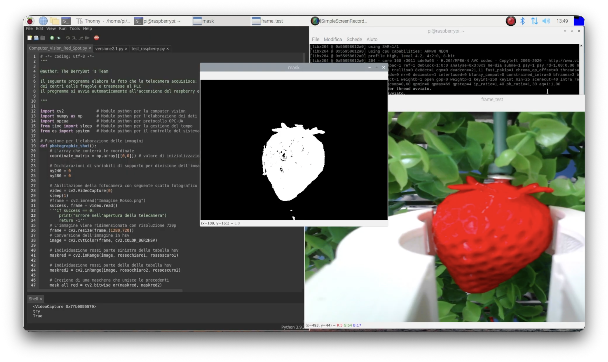

- Date
- May 2022
- Category
- Robotics & Control Systems
- Stack
- Siemens S7-1200 · ABB OmniCore · Python · OPC UA
BerryBot: Automated Strawberry Harvesting System

Problem Statement
Agriculture faces growing challenges, including a global population projected to reach 9.7 billion by 2050 and a shrinking agricultural workforce. Labour shortages contribute to crop losses, while delays in harvesting delicate fruits such as strawberries can compromise their quality and market value. The goal was to develop an automated harvesting system capable of improving operational efficiency while minimizing stress on plants.
Proposed Solution
We developed BerryBot, an integrated system combining a Raspberry Pi-based computer vision system, an ABB anthropomorphic robotic arm, and a Siemens S7-1200 Safety PLC. Rather than relying on computationally intensive AI models, the vision algorithm identifies red pixels to estimate the centre coordinates of ripe strawberries. These coordinates are transmitted to the PLC via OPC UA, which coordinates the robotic arm's movements through PROFINET. The automated cell can also be monitored and controlled remotely through a custom-built web-based HMI.
Key Results
- Achieved first place in the 2022 Siemens Automation Olympics regional competition in Veneto.
- Demonstrated Machine-to-Machine (M2M) communication using industrial protocols, including OPC UA and PROFINET.
- Developed a functional web-based HMI for remote monitoring and control of the automation system.